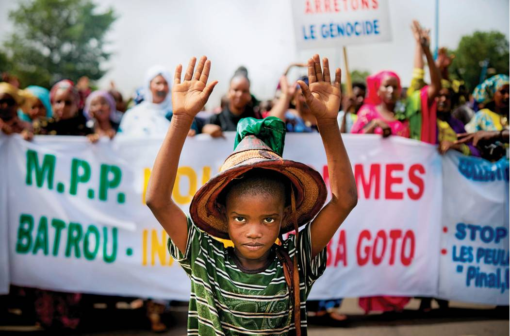

In Arm’s Way

COUNTERCLOCKWISE FROM LEFT: HOSHANG HASHIMI/AFP/GETTY IMAGES; JOSH EDELSON/AFP/GETTY; MICHELE CATTANI/AFP/GETTY MICHELE CATTANI
A Fulani boy stands before a sign reading “Stop the genocide” on June 30, during a silent march in response to dozens massacred in the village of Koumaga the week before. The West African nation is experiencing violent instability ahead of elections in July.